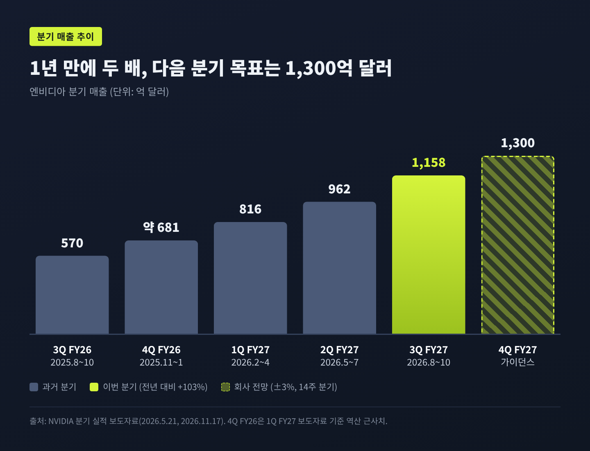
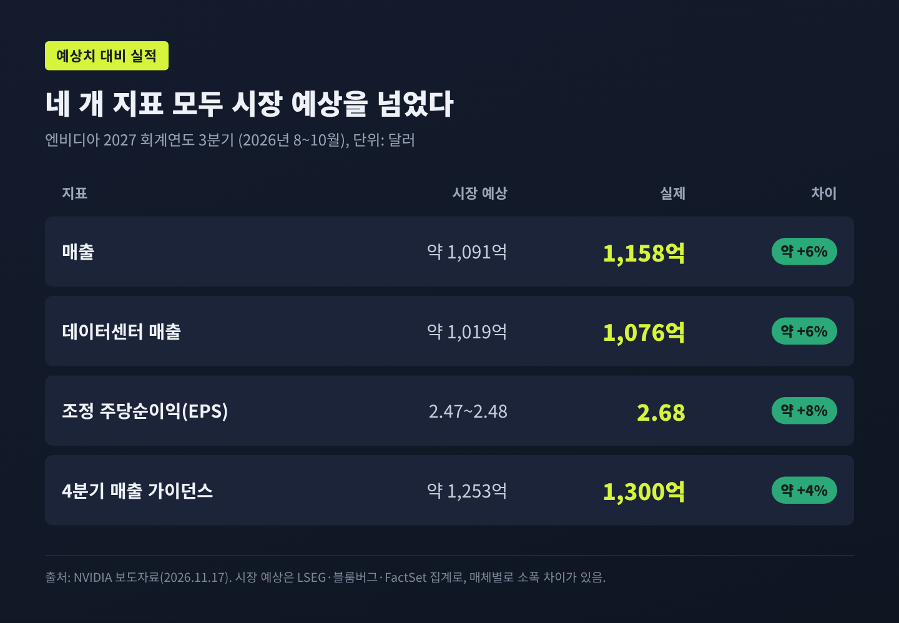
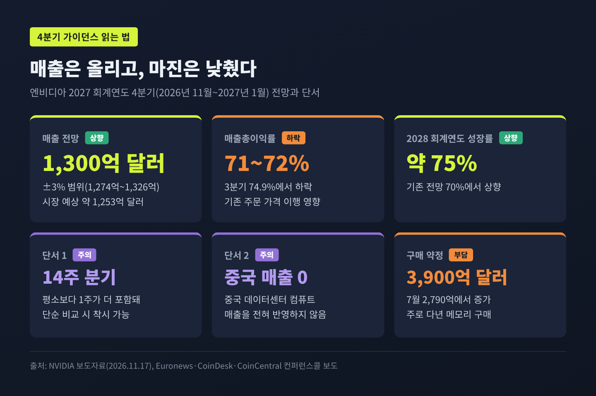
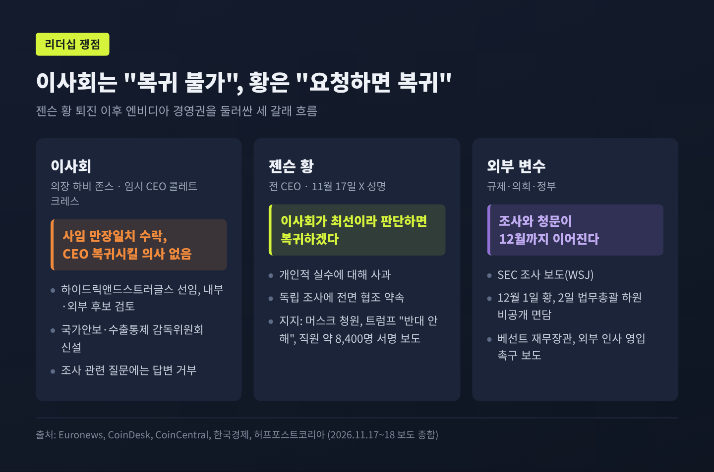
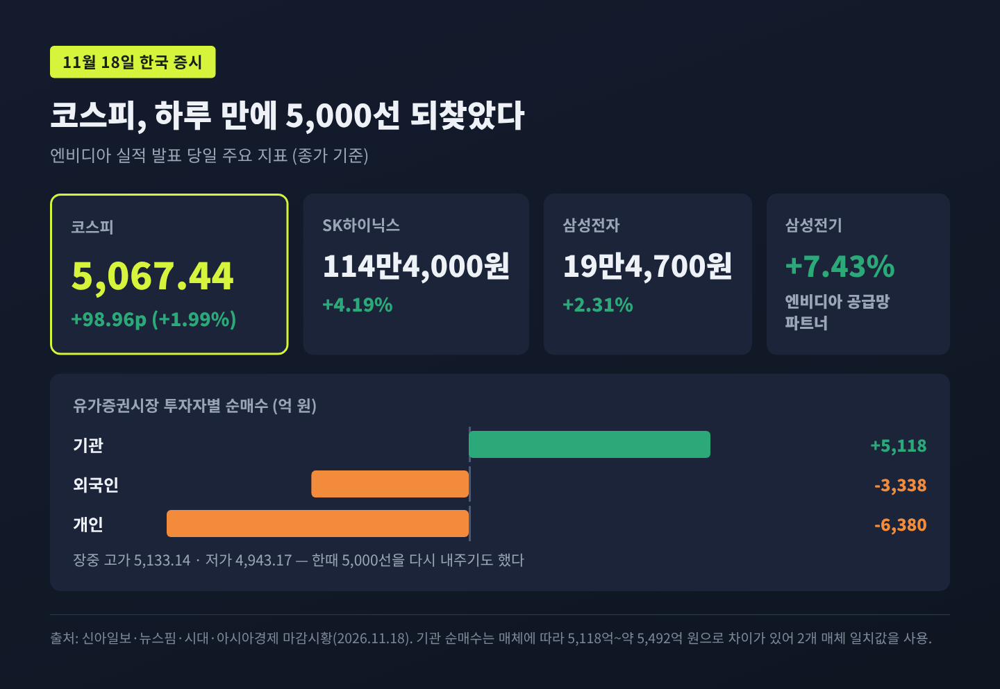

엔비디아 3분기 실적 1,158억 달러, 젠슨 황 없이도 예상 넘었다

이번 글에서는 젠슨 황 퇴진 이후 처음 나온 엔비디아 실적을 숫자 중심으로 정리해 보겠습니다. 리더십 공백 속에서도 성적표는 시장 기대를 넘었고, 그 여파는 18일 코스피 반등으로 이어졌습니다.
세 줄 요약
- 엔비디아 2027 회계연도 3분기(8~10월) 매출은 1,158억 달러로 전년보다 103% 늘었고, 시장 예상치(약 1,091억 달러)를 6%가량 웃돌았습니다.
- 4분기 매출 가이던스는 1,300억 달러로 예상보다 높았지만, 매출총이익률 전망은 71~72%로 내려갔습니다.
- 이사회는 젠슨 황의 CEO 복귀를 받아들이지 않겠다고 밝혔고, 주가는 시간외에서 4% 안팎 올랐습니다.
■ 무슨 일이 있었나 — 숫자로 본 3분기
엔비디아는 미국 시각 11월 17일 장 마감 후, 한국 시각 18일 새벽에 실적을 발표했습니다. 분기 매출은 1,158억 달러입니다. 전 분기 962억 달러보다 20%, 1년 전 570억 달러보다 103% 늘었습니다. 분기 매출이 1,000억 달러를 넘은 것은 회사 역사상 처음입니다.

중심에는 데이터센터가 있습니다. 데이터센터 매출은 1,076억 달러로 1년 새 110% 늘었고, 전체 매출의 약 93%를 차지했습니다. 로봇·게이밍 그래픽카드·로컬 AI 기기를 묶은 엣지 컴퓨팅 부문은 82억 달러였습니다.
이익도 함께 커졌습니다. GAAP 영업이익은 775억 달러, 순이익은 653억 달러입니다. 조정 주당순이익(EPS)은 2.68달러로, 시장 예상치 2.47~2.48달러를 넘었습니다. 매출총이익률은 조정 기준 74.9%로 높은 수준을 지켰습니다.

■ 왜 중요한가 — '황 없는 엔비디아'의 첫 시험대
이번 실적은 단순한 분기 성적이 아니었습니다. 창업자가 물러난 회사가 여전히 같은 속도로 달릴 수 있는지를 처음 확인하는 자리였습니다.
실적 발표 전 분위기는 무거웠습니다. 주가는 발표 직전 한 달 동안 약 29% 떨어졌습니다. 10월 6일 기록한 사상 최고가와 비교하면 3분의 1가량 낮은 수준이었습니다. 적어도 10명의 애널리스트가 투자의견을 '보유'로 낮췄습니다.
숫자는 그 불안을 상당 부분 덜어냈습니다. 임시 CEO 콜레트 크레스는 보도자료에서 "우리의 모멘텀은 진짜"라고 강조했습니다. 신형 플랫폼 '베라 루빈'은 첫 출하 분기에만 약 200억 달러의 매출을 올린 것으로 전해졌습니다. 회사는 이를 역사상 가장 빠른 제품 램프업이라고 설명했습니다.
2028 회계연도 매출 성장률 전망도 70%에서 약 75%로 올렸습니다. 1년 뒤까지의 수요를 자신한다는 신호로 읽힙니다. 시장은 이를 반겼습니다. 엔비디아 주가는 시간외 거래에서 4% 넘게 올랐고, 18일 미국 프리마켓에서도 3.7% 상승세를 이어갔습니다.
■ 마진과 가이던스 — 좋은 숫자 뒤의 단서
다만 모든 지표가 위만 향한 것은 아닙니다.
4분기 매출 가이던스는 1,300억 달러(±3%)입니다. 시장 예상치 약 1,253억 달러를 4%가량 웃돕니다. 그런데 이 숫자에는 두 가지 단서가 붙어 있습니다. 하나는 4분기가 평소보다 1주 긴 14주짜리 분기라는 점입니다. 다른 하나는 중국 데이터센터 컴퓨트 매출을 '0'으로 가정했다는 점입니다.

더 눈여겨볼 대목은 마진입니다. 4분기 매출총이익률 전망은 71~72%로, 3분기 74.9%보다 3%포인트 안팎 낮습니다. 크레스는 이미 받은 주문을 합의한 가격대로 이행하는 영향이라고 설명했습니다. 마진은 4분기에 바닥을 찍고 다음 회계연도에 회복할 것이라는 전망도 덧붙였습니다.
비용 쪽 약속도 커졌습니다. 공급·생산능력 약정은 7월 2,790억 달러에서 3,900억 달러로 늘었습니다. 증가분은 주로 다년 메모리 구매 때문이라고 합니다. 수요를 확신하기에 미리 물량을 잡아둔 것이지만, 수요가 꺾이면 부담으로 돌아올 수 있는 숫자이기도 합니다.
네오클라우드에 대한 태도도 달라졌습니다. 크레스는 코어위브·네비우스 같은 AI 전문 클라우드 기업을 계속 지원하되 "규율 있고 선별적으로" 하겠다고 밝혔습니다. 보증은 데이터센터가 가동 준비를 마친 뒤에야 시작하고, 부지 매입이나 초기 건설 단계에는 제공하지 않는다는 설명입니다. 그럼에도 시장은 실적 자체에 더 무게를 뒀습니다. 18일 프리마켓에서 코어위브는 6.5%, 네비우스는 8.1% 올랐습니다.
■ 리더십 공백 — 이사회는 "복귀는 없다"
실적만큼 주목받은 것은 컨퍼런스콜의 첫 발언이었습니다. 하비 존스 이사회 의장은 이사회가 황의 사임을 만장일치로 수락했으며, 그를 CEO로 복귀시킬 의사가 없다고 못 박았습니다.
황은 같은 날 X에 성명을 올렸습니다. 이사회가 주주·직원·회사·미국에 최선이라고 판단한다면 복귀하겠다는 내용이었습니다. 개인적 실수에 대해 사과하고 독립 조사에 협조하겠다고도 했습니다.

복귀를 지지하는 목소리도 작지 않습니다. 일론 머스크가 지지 청원에 힘을 보탰고, 트럼프 대통령도 복귀를 반대하지 않는다는 입장입니다. 직원 4만2천 명 가운데 약 8,400명이 복귀 청원에 서명했다는 보도도 나왔습니다. 반대로 스콧 베선트 재무장관은 외부 인사 영입을 촉구한 것으로 전해졌습니다.
이사회는 헤드헌팅 기업 하이드릭앤드스트러글스를 선임해 내부·외부 후보를 모두 살피고 있습니다. '국가안보·수출통제 감독위원회'도 새로 꾸렸습니다. 그러나 불확실성은 여전합니다. 월스트리트저널은 SEC가 엔비디아 공시의 적절성을 조사하고 있다고 보도했습니다. 황과 팀 테터 법무총괄은 12월 1일과 2일 하원 3개 위원회의 비공개 면담에 응하기로 했습니다.
예전엔 '엔비디아=젠슨 황'이라는 등식이 자연스러웠습니다. 지금 시장은 그 등식 없이도 회사가 굴러가는지를 분기마다 확인하려 할 것입니다. 투자닷컴의 토머스 몬테이로는 질서 있는 CEO 교체가 반드시 기업가치를 희석하는 것은 아니라고 평가했습니다.
■ 수출통제와 중국 — 매출에서 지워지는 시장
중국은 이제 숫자에서 거의 사라졌습니다. 엔비디아는 지난 분기 중국에 호퍼 칩을 약 24억 달러어치 팔았지만, 앞으로는 판매를 멈추기로 했습니다. 4분기 가이던스가 중국 데이터센터 매출을 아예 빼고 짠 이유이기도 합니다.
규제 환경도 더 촘촘해졌습니다. 미국 상무부 산업안보국(BIS)은 16일 해외 데이터센터를 통한 원격 접속 우회를 막는 규칙을 발표했습니다. 중국·마카오 본사 기업에 대규모 연산 능력을 제공하는 해외 데이터센터에는 칩 수출 허가가 필요해집니다. 인도네시아·말레이시아·싱가포르·태국·브라질 5개국에는 첨단 반도체 수출 허가 요건이 별도로 붙었습니다. 이 규칙의 내용은 지난 글에서 자세히 다뤘으니, 여기서는 실적에 미치는 의미만 짚겠습니다.
당장의 매출 타격은 크지 않습니다. 이미 중국 매출을 0으로 가정했기 때문입니다. 문제는 동남아 데이터센터 수요입니다. 허가 절차가 길어지면 이 지역으로 가는 물량의 속도가 늦춰질 수 있습니다. 황의 사임 배경에 중국 관련 의혹이 얽혀 있다는 점도 규제 당국의 시선을 더 날카롭게 만드는 요인입니다.
■ 한국 반도체와 코스피 — HBM 공급망이 받은 신호
엔비디아 실적은 한국 증시에 곧바로 전해졌습니다. 18일 코스피는 98.96포인트(1.99%) 오른 5,067.44로 마감했습니다. 전날 4,968.48로 밀렸던 지수가 하루 만에 5,000선을 되찾았고, 4거래일 연속 하락도 끝났습니다.
SK하이닉스는 4.19% 오른 114만4,000원, 삼성전자는 2.31% 오른 19만4,700원에 장을 마쳤습니다. 엔비디아 공급망 파트너로 이름을 올린 삼성전기는 7.43% 뛰었습니다.

연결 고리는 HBM(고대역폭메모리)입니다. 베라 루빈 NVL72 랙에는 GPU 72개가 들어가고, GPU마다 HBM4가 288GB씩 붙습니다. SK하이닉스는 4분기 HBM4 출하와 매출이 HBM3E를 넘어설 것으로 보고 청주 M15X 증산을 준비하고 있습니다. 삼성전자는 3분기 HBM4 판매를 크게 늘렸고, 4분기에 HBM과 서버 D램 판매를 더 확대할 계획입니다. 앞서 업계에서는 SK하이닉스가 올해 엔비디아 HBM4 물량의 약 3분의 2를 배정받은 것으로 알려졌습니다.
위에서 본 3,900억 달러 구매 약정의 증가분이 주로 다년 메모리 구매라는 점도 의미가 있습니다. 엔비디아가 메모리를 오래, 많이 쓰겠다고 계약서로 확인한 셈이기 때문입니다.
물론 한계도 분명했습니다. 코스피는 2.6% 높게 출발했지만 장중 한때 4,943선까지 밀리며 5,000선을 내주기도 했습니다. 기관이 5,118억 원을 순매수했지만, 외국인은 3,338억 원, 개인은 6,380억 원을 순매도했습니다. 중국향 호퍼 출하 중단 소식이 상승 폭을 눌렀다는 분석도 나왔습니다. 대신증권 이경민 연구원은 엔비디아 실적이 AI 수요에 대한 의구심을 수치로 반박했다며 "1차 변곡점의 첫 관문을 통과했다"고 평가했습니다. 동시에 과도한 낙관은 경계해야 한다고 덧붙였습니다.
■ 앞으로 볼 것 — 세 가지 일정
첫째, 앤트로픽 상장입니다. 미국 시각 19일 나스닥 상장이 예정돼 있습니다. 엔비디아 데이터센터 매출의 약 15%를 주요 AI 연구소들이 차지할 것이라는 전망을 감안하면, 공모 흥행은 AI 수요의 지속성을 가늠하는 또 하나의 잣대가 됩니다.
둘째, 12월 초 의회 일정입니다. 황과 법무총괄의 하원 비공개 면담 결과에 따라 수출통제 논란이 다시 커질 수 있습니다. SEC 조사의 진행 상황도 함께 지켜봐야 합니다.
셋째, 차기 CEO 인선과 마진 회복입니다. 이사회가 누구를 선택하느냐에 따라 '황 없는 엔비디아'의 방향이 달라집니다. 4분기 71~72%로 예고된 마진이 실제로 바닥을 찍는지도 다음 실적에서 확인할 대목입니다. 12월 미국 FOMC에서 금리 인상이 거의 확실시된다는 점도 기술주 전반의 변수입니다.
정리하면 이렇습니다. 엔비디아는 창업자 없이 치른 첫 시험에서 숫자로는 합격점을 받았습니다. 하지만 낮아진 마진, 커진 구매 약정, 비어 있는 CEO 자리는 다음 분기까지 남는 숙제입니다.
"수요는 증명됐고, 리더십은 아직 증명 중입니다."
한국 메모리 기업에 이번 실적이 호재냐고 물으신다면, 그렇다고 답하겠습니다. 다만 그 호재가 오래가려면 엔비디아의 다음 분기도 지금처럼 단단해야 합니다.
이 글은 공개된 실적 발표와 언론 보도를 바탕으로 한 정보 정리이며, 투자 권유가 아닙니다. 투자 판단과 책임은 본인에게 있습니다.
참고 출처
- NVIDIA, "NVIDIA Announces Financial Results for Third Quarter Fiscal 2027" (2026-11-17) — https://nvidianews.nvidia.com/news/nvidia-announces-financial-results-for-third-quarter-fiscal-2027
- NVIDIA Investor Relations, Quarterly Earnings — https://investor.nvidia.com/financial-info/quarterly-earnings
- Euronews, "Nvidia beats forecasts and rules out Huang's return as CEO" (2026-11-18) — https://euronews.com/2026/11/18/nvidia-beats-forecasts-and-rules-out-huangs-return-as-ceo
- CoinDesk, "Nvidia shares rise on earnings beat, raised outlook despite leadership uncertainty" (2026-11-17) — https://www.coindesk.com/markets/2026/11/17/nvidia-tops-estimates-issues-strong-guidance-adds-usd150-billion-to-buyback-authorization
- Eurasia Business News (2026-11-18) — https://eurasiabusinessnews.com/2026/11/18/nvidia-beats-earnings-estimates-raises-guidance-in-first-report-after-jensen-huangs-exit/
- CoinCentral (2026-11-18) — https://coincentral.com/nvidia-nvda-stock-rises-4-after-earnings-beat-as-board-rules-out-huang-return/
- Reuters via Yahoo Finance, "Nasdaq futures jump as Nvidia forecast lifts AI trade" (2026-11-18) — https://finance.yahoo.com/markets/stocks/articles/nasdaq-futures-jump-nvidia-forecast-103531610.html
- Yahoo Finance 라이브 업데이트 (2026-11-16) — https://finance.yahoo.com/technology/live/nvidia-live-updates-interim-ceo-kress-prepares-for-q3-earnings-with-huang-reportedly-planning-comeback-153114076.html
- 한국경제, "젠슨 황 '복귀 원해' vs 이사회 '고려 안해'" (2026-11-18) — https://www.hankyung.com/article/202611184351i
- 한국경제, "삼전닉스에 또 돈벼락 쏟아지나" (2026-11-18) — https://www.hankyung.com/article/202611184978g
- 허프포스트코리아 (2026-11-18) — https://www.huffingtonpost.kr/article/262171
- 뉴스핌, "[마감시황] 엔비디아·기관 매수세…코스피 5000선 탈환" (2026-11-18) — https://newspim.com/news/view/20261118001065
- 신아일보, "[마감시황] 엔비디아 호실적에 삼전·닉스 '동반 반등'" (2026-11-18) — https://www.shinailbo.co.kr/news/articleView.html?idxno=5085013
- 시대, "엔비디아 호재, 코스피 5000선 회복…SK하이닉스 4% ↑" (2026-11-18) — https://www.sidae.com/article/2026111815245992514
- 아시아경제, "코스피, 98.96P 오른 5067.44 마감" (2026-11-18) — https://view.asiae.co.kr/article/2026111815315835541
- BIS, "BIS Issues Rule Addressing Remote Access to American Super Intelligence Technology" (2026-11-16) — https://bis.gov/press-release/bis-issues-rule-addressing-remote-access-american-super-intelligence-technology
- AP via KIRO7 (2026-11-16) — https://www.kiro7.com/news/business/trump-administration/JRWQAT6KNAYS5HIK24N543GDKI/
- 이투데이, "엔비디아 HBM4 공급망, 삼성·하이닉스·마이크론 3사 경쟁 구도" (2026-02-14) — https://www.etoday.co.kr/news/view/2556943